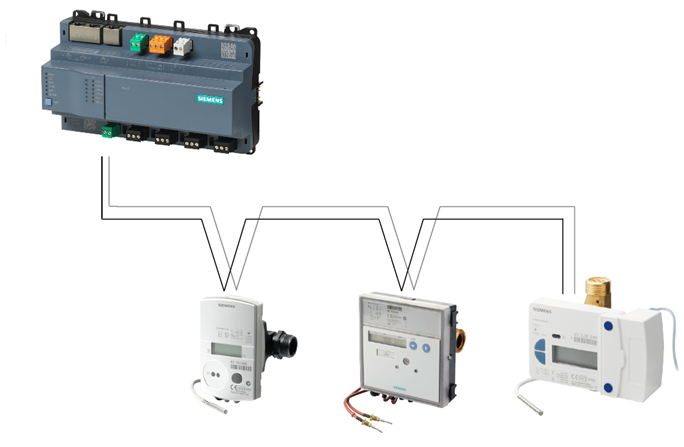
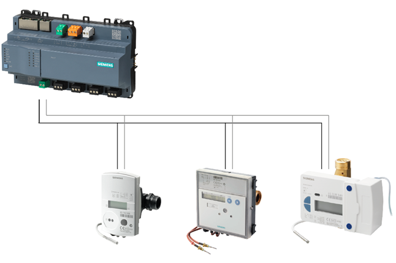
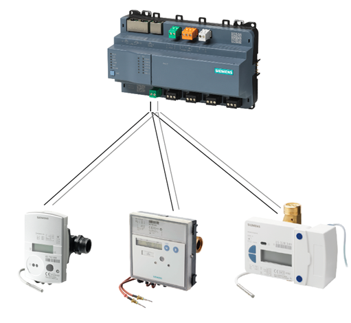
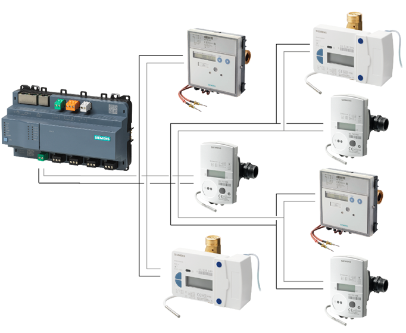
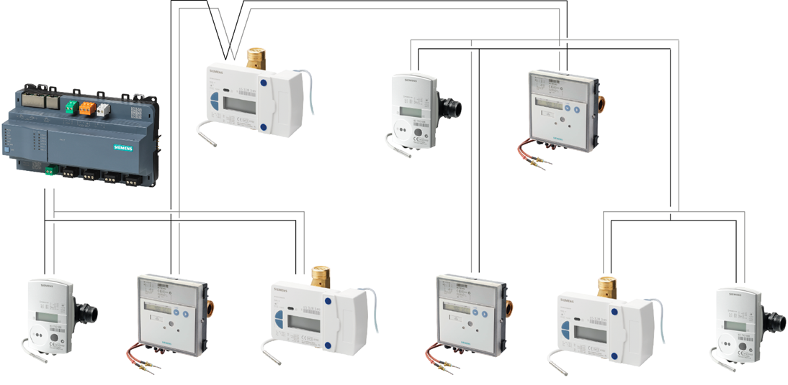
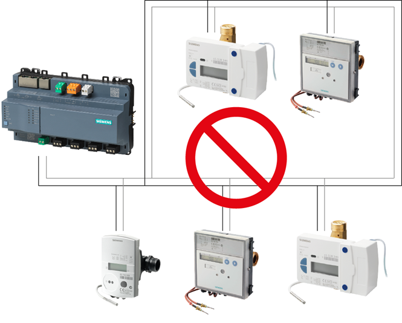

M总线拓扑
M-bus 允许各种网络拓扑。这些设备可以以线型、总线型、星型或树型拓扑或其组合的方式连接到电平转换器。

不允许采用环形拓扑。
Line topology |
 |
Bus topology |
 |
Star topology |
 |
Tree topology |
 |
Combination of topologies |
 |
Ring topology |
 |
总线电缆极性无关，简化了安装。